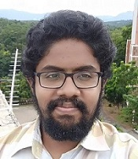

I am a Project Engineer at Indian Institute of Space Science and Technology(IIST), with specialization in Avionics System Design, Integration & Testing for Small Satellites. I am also working in Design & Development of Satellite Telemetry Telecommand Tracking Ground station.
“Keep Calm and Learn Electronics.”
--
Satellite Ground Station Lab
L305/D4, AeroSpace Block
Indian Institute of Space Science and Technology
Thiruvananthapuram, India - 695547